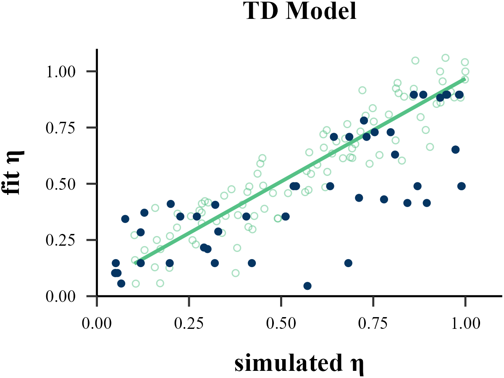
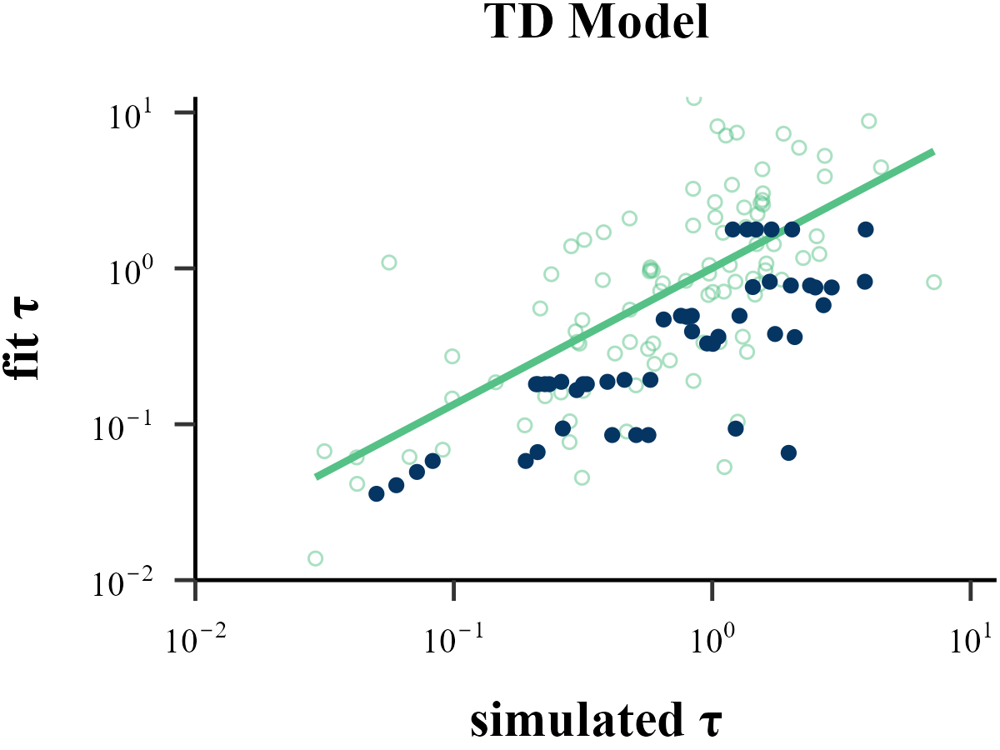
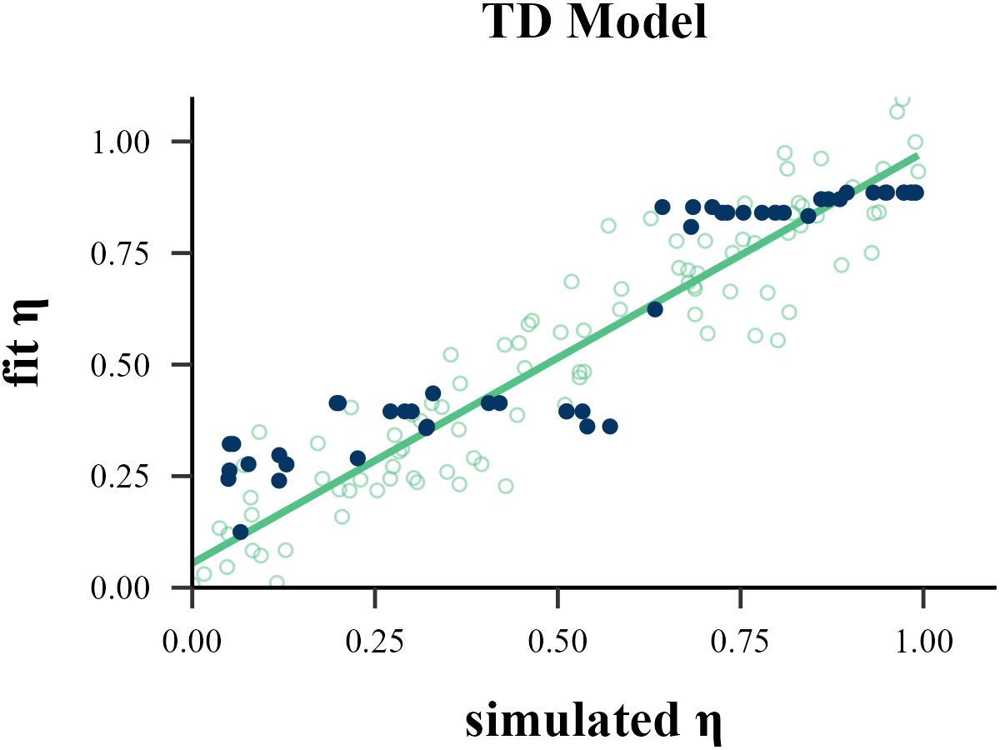
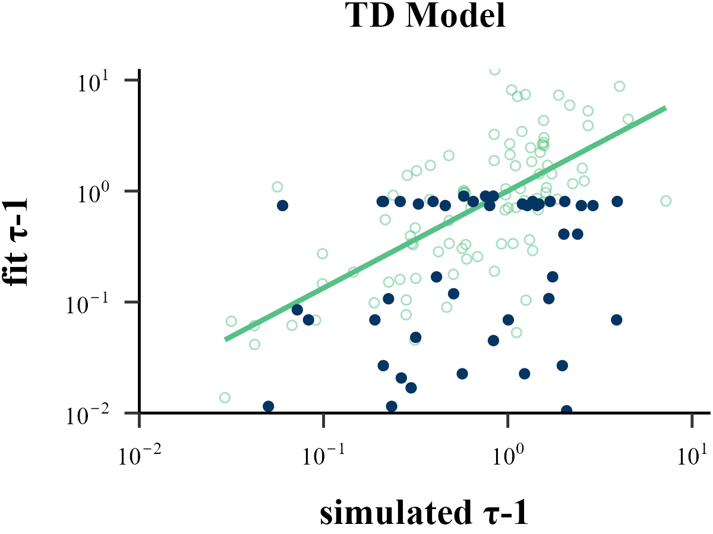
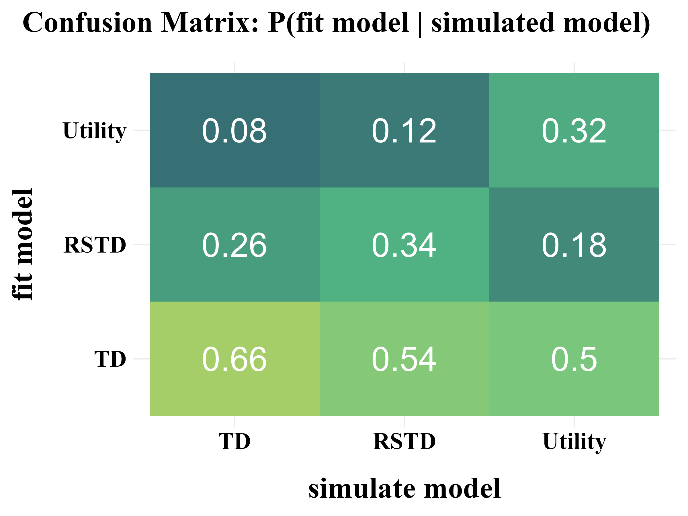
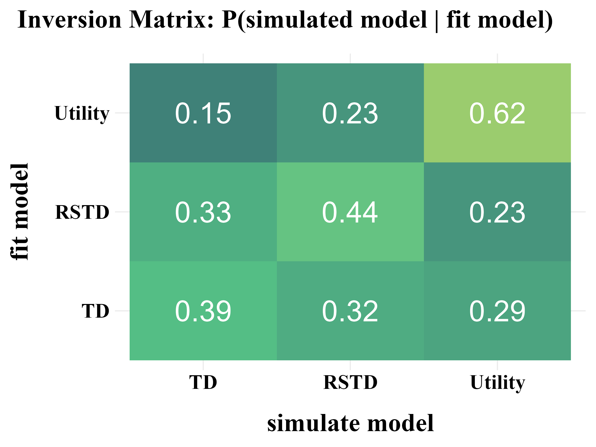
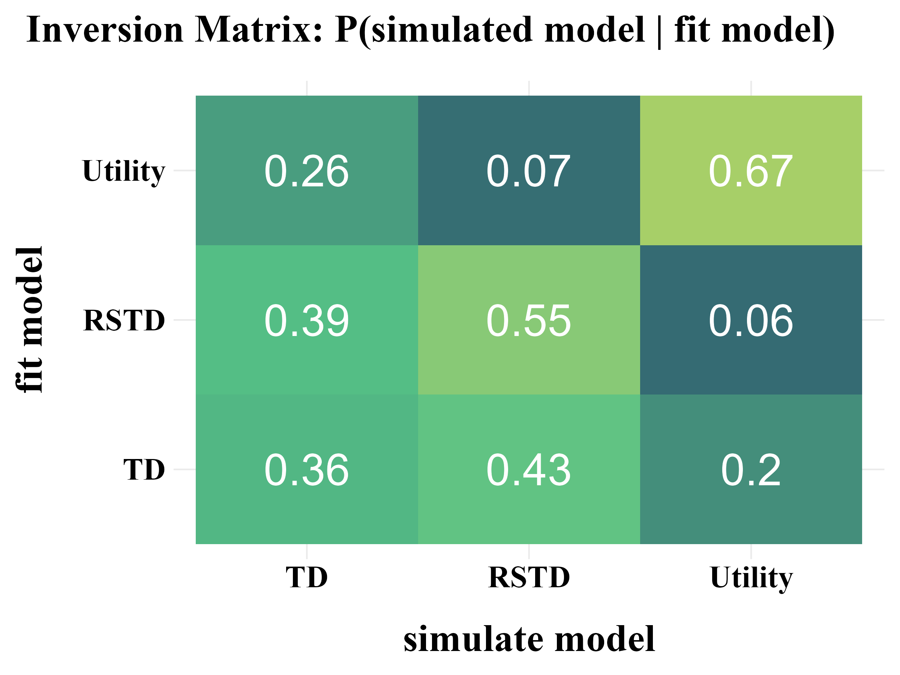

Overview
This package is designed to help users build the Rescorla-Wagner Model for Two-Alternative Forced Choice (TAFC) tasks, which could be the simplest reinforcement learning models, assuming that reward outcomes are independent and identically distributed (i.i.d.) across trials. Beginners can define models using simple if-else logic, making model construction more accessible.
How to cite
YuKi. (2025). binaryRL: Reinforcement Learning Tools for Two-Alternative Forced Choice Tasks. R package version 0.8.0. https://CRAN.R-project.org/package=binaryRL
Hu, M., & Liu, Z. (2025). binaryRL: A Package for Building Reinforcement Learning Models in R. Journal(7), 100-123. https://doi.org/
Install and Load Pacakge
# Install the stable version from CRAN
install.packages("binaryRL")
# Install the latest version from GitHub
remotes::install_github("yuki-961004/binaryRL@*release")
# Load package
library(binaryRL)
# Obtain help document
?binaryRL
╔══════════════════════════╗
║ ╔----------╗ ║
║ | ██████╗ | ██╗ ║
| _) ║ | ██╔══██╗ | ██║ ║
__ \ | __ \ _` | __| | | ║ | ██████╔╝ | ██║ ║
| | | | | ( | | | | ║ | ██╔══██╗ | ██║ ║
_.__/ _| _| _| \__,_| _| \__, | ║ | ██║ ██║ | ███████╗ ║
____/ ║ | ╚═╝ ╚═╝ | ╚══════╝ ║
║ ╚----------╝ ║
╚══════════════════════════╝
Algorithms for Parallel Data Fitting
While this R package is primarily designed for constructing reinforcement learning (RL) models (with run_m at its core), its flexibility extends further.
The key functions, rcv_d and fit_p, provide a unified interface to seamlessly integrate a diverse range of optimization algorithms. Crucially, they offer a parallel solution for tasks like parameter optimization, parameter recovery, and model recovery.
This means you can leverage this package not only for building and fitting RL models, but also as a versatile algorithm library for fitting other “black-box functions” in parallel for each subject. This significantly reduces processing time, provided your function’s parameters can be optimized independently for each subject.
Base R Optimization
- L-BFGS-B (from stats::optim)
Specialized External Optimization - Simulated Annealing (GenSA)
- Genetic Algorithm (GA)
- Differential Evolution (DEoptim).
- Particle Swarm Optimization (pso) - Bayesian Optimization (mlrMBO) - Covariance Matrix Adapting Evolutionary Strategy (cmaes)
Optimization Library - Nonlinear Optimization (nloptr)
NOTE: If you want to use an algorithm other than L-BFGS-B, you must install the corresponding package.
Read your Raw Data
Our package includes a minimally processed version of a publicly available dataset from Mason et al. (2024) as example data. This dataset represents a classic Two-Armed Bandit task, a typical example of a Two-Alternative Forced Choice (TAFC) paradigm.
# An open data from Mason et. al. (2024) https://osf.io/hy3q4/
head(Mason_2024_Exp2)| Subject | Block | Trial | L_choice | R_choice | L_reward | R_reward | Sub_Choose |
|---|---|---|---|---|---|---|---|
| 1 | 1 | 1 | A | B | 36 | 40 | A |
| 1 | 1 | 2 | B | A | 0 | 36 | B |
| 1 | 1 | 3 | C | D | -36 | -40 | C |
| 1 | 1 | 4 | D | C | 0 | -36 | D |
| … | … | … | … | … | … | … | … |
NOTES
- Your dataset needs to include these columns.
- You can also add two additional variables as factors that the model needs to consider.
Reference
Mason, A., Ludvig, E. A., Spetch, M. L., & Madan, C. R. (2024). Rare and extreme outcomes in risky choice. Psychonomic Bulletin & Review, 31(3), 1301-1308. https://doi.org/10.3758/s13423-023-02415-x
Tutorial
- The development and usage workflow of this R package adheres to the four stages (ten rules) recommended by Wilson & Collins (2019).
- The three basic models built into this R package are referenced from Niv et al. (2012).


Reference
Wilson, R. C., & Collins, A. G. (2019). Ten simple rules for the computational modeling of behavioral data. Elife, 8, e49547. https://doi.org/10.7554/eLife.49547
Niv, Y., Edlund, J. A., Dayan, P., & O’Doherty, J. P. (2012). Neural prediction errors reveal a risk-sensitive reinforcement-learning process in the human brain. Journal of Neuroscience, 32(2), 551-562. https://doi.org/10.1523/JNEUROSCI.5498-10.2012
1. Run Model
Create a function with ONLY ONE argument, params
Model <- function(params){
res <- binaryRL::run_m(
data = data,
id = id,
mode = mode,
n_trials = n_trials,
n_params = n_params,
# ╔═══════════════════════════════════╗ #
# ║ You only need to modify this part ║ #
# ║ -------- free parameters -------- ║ #
eta = c(params[1], params[2]),
gamma = c(params[3], params[4]),
epsilon = c(params[5], params[6]),
tau = c(params[7], params[8]),
lambda = c(params[9], params[...]),
# ║ -------- core functions --------- ║ #
util_func = your_util_func,
rate_func = your_rate_func,
expl_func = your_expl_func,
prob_func = your_prob_func,
# ║ --------- column names ---------- ║ #
sub = "Subject",
time_line = c("Block", "Trial"),
L_choice = "L_choice",
R_choice = "R_choice",
L_reward = "L_reward",
R_reward = "R_reward",
sub_choose = "Sub_Choose",
var1 = "extra_Var1",
var2 = "extra_Var2"
# ║ You only need to modify this part ║ #
# ╚═══════════════════════════════════╝ #
)
assign(x = "binaryRL.res", value = res, envir = binaryRL.env)
switch(mode, "fit" = -res$ll, "simulate" = res, "replay" = res)
}Custom Functions
You can also customize all four functions to build your own RL model. - The default function is applicable to three basic models (TD, RSTD, Utility).
Utility Function (γ)
print(binaryRL::func_gamma)Learning Rate Function (η)
func_eta <- function (
# variables
value, utility, reward, occurrence, var1, var2,
# parameters
eta, alpha, beta
){
# TD
if (length(eta) == 1) {
eta <- as.numeric(eta)
}
# RSTD
else if (length(eta) > 1 & utility < value) {
eta <- eta[1]
}
else if (length(eta) > 1 & utility >= value) {
eta <- eta[2]
}
else {
eta <- "ERROR"
}
return(eta)
}Exploration Function (ε)
print(binaryRL::func_epsilon)
func_epsilon <- function(
# variables
i, var1, var2,
# parameters
threshold, epsilon, lambda, alpha, beta
){
# epsilon-first
if (i <= threshold) {
try <- 1
} else if (i > threshold & is.na(epsilon) & is.na(lambda)) {
try <- 0
# epsilon-greedy
} else if (i > threshold & !(is.na(epsilon)) & is.na(lambda)){
try <- sample(
c(1, 0),
prob = c(epsilon, 1 - epsilon),
size = 1
)
# epsilon-decreasing
} else if (i > threshold & is.na(epsilon) & !(is.na(lambda))) {
try <- sample(
c(1, 0),
prob = c(
1 / (1 + lambda * i),
lambda * i / (1 + lambda * i)
),
size = 1
)
}
else {
try <- "ERROR"
}
return(try)
}Soft-Max Function (τ)
func_tau <- function (
# variables
LR, try, L_value, R_value, var1, var2,
# parameters
tau, alpha, beta
){
if (!(LR %in% c("L", "R"))) {
stop("LR = 'L' or 'R'")
}
else if (try == 0 & LR == "L") {
prob <- 1 / (1 + exp(-(L_value - R_value) * tau))
}
else if (try == 0 & LR == "R") {
prob <- 1 / (1 + exp(-(R_value - L_value) * tau))
}
else if (try == 1) {
prob <- 0.5
}
else {
prob <- "ERROR"
}
return(prob)
}Three Classic RL Models
These basic models are built into the package. You can use them using binaryRL::TD.fit, binaryRL::RSTD.fit, binaryRL::Utility.fit.
1. TD Model ()
“The TD model is a standard temporal difference learning model (Barto, 1995; Sutton, 1988; Sutton and Barto, 1998).”
if only ONE is set as a free paramters, it represents the TD model.
2. Risk-Sensitive TD Model (, )
“In the risk-sensitive TD (RSTD) model, positive and negative prediction errors have asymmetric effects on learning (Mihatsch and Neuneier, 2002).”
If TWO are set as free parameters, it represents the RSTD model.
2. Parameter and Model Recovery
Here, using the publicly available data from Mason et al. (2024), we demonstrate how to perform parameter recovery and model recovery following the method suggested by Wilson & Collins (2019).
- Notably, Wilson & Collins (2019) recommend increasing the softmax parameter by 1 during model recovery, as this can help reduce the amount of noise in behavior.
- Additionally, different algorithms and varying number of iterations can also influence the results of both parameter recovery and model recovery. You should adjust these settings based on your specific needs and circumstances.
recovery <- binaryRL::rcv_d(
data = binaryRL::Mason_2024_Exp2,
# ╔═══════════════════════════════════════════════════════════════════════════╗ #
# ║ --------------------------- black-box function -------------------------- ║ #
#funcs = c("my_util_func", "my_rate_func", "my_expl_func", "my_prob_func"),
model_names = c("TD", "RSTD", "Utility"),
simulate_models = list(binaryRL::TD, binaryRL::RSTD, binaryRL::Utility),
simulate_lower = list(c(0, 1), c(0, 0, 1), c(0, 0, 1)),
simulate_upper = list(c(1, 1), c(1, 1, 1), c(1, 1, 1)),
fit_models = list(binaryRL::TD, binaryRL::RSTD, binaryRL::Utility),
fit_lower = list(c(0, 1), c(0, 0, 1), c(0, 0, 1)),
fit_upper = list(c(1, 5), c(1, 1, 5), c(1, 1, 5)),
# ║ --------------------------- interation number --------------------------- ║ #
iteration_s = 50,
iteration_f = 50,
# ║ ------------------------------- algorithms ------------------------------ ║ #
nc = 1, # <nc > 1>: parallel computation across subjects
# Base R Optimization
algorithm = "L-BFGS-B" # Gradient-Based (stats)
# ║ ------------------------------------------------------------------------- ║ #
# Specialized External Optimization
#algorithm = "GenSA" # Simulated Annealing (GenSA)
#algorithm = "GA" # Genetic Algorithm (GA)
#algorithm = "DEoptim" # Differential Evolution (DEoptim)
#algorithm = "PSO" # Particle Swarm Optimization (pso)
#algorithm = "Bayesian" # Bayesian Optimization (mlrMBO)
#algorithm = "CMA-ES" # Covariance Matrix Adapting (cmaes)
# ║ ------------------------------------------------------------------------- ║ #
# Optimization Library (nloptr)
#algorithm = c("NLOPT_GN_MLSL", "NLOPT_LN_BOBYQA")
# ║ ------------------------------- algorithms ------------------------------ ║ #
# ╚═══════════════════════════════════════════════════════════════════════════╝ #
)
result <- dplyr::bind_rows(recovery) %>%
dplyr::select(simulate_model, fit_model, iteration, everything())
write.csv(result, file = "../OUTPUT/result_recovery.csv", row.names = FALSE)Simulating Model: TD | Fitting Model: TD |================ | 10%
Check the Example Result: result_recovery.csv
binaryRL::rcv_d() is the for-loop version of binaryRL::simulate_list() and binaryRL::recovery_data(), allowing you to generate simulated data using all models at once and then fit all models to the simulated data. We also encourage advanced users to use binaryRL::simulate_list() and binaryRL::recovery_data() separately for parameter recovery and model recovery. Below is an example code.
binaryRL::simulate_list()
list_simulated <- binaryRL::simulate_list(
data = binaryRL::Mason_2024_Exp2,
obj_func = binaryRL::RSTD,
n_params = 3,
n_trials = 360,
lower = c(0, 0, 1),
upper = c(1, 1, 1),
iteration = 30
)binaryRL::recovery_data()
df_recovery <- binaryRL::recovery_data(
list = list_simulated,
fit_model = binaryRL::RSTD,
model_name = "RSTD",
n_params = 3,
n_trials = 360,
lower = c(0, 0, 1),
upper = c(1, 1, 5),
iteration = 30,
nc = 1,
algorithm = "L-BFGS-B"
)Parameter Recovery [Example Code]
“Before reading too much into the best-fitting parameter values, , it is important to check whether the fitting procedure gives meaningful parameter values in the best case scenario, -that is, when fitting fake data where the ‘true’ parameter values are known (Nilsson et al., 2011). Such a procedure is known as ‘Parameter Recovery’, and is a crucial part of any model-based analysis.”


The value of the softmax parameter affects the recovery of other parameters in the model. Under the assumption that , adding 1 to all values improves the recovery of the learning rate , but decreases the recovery accuracy of itself.


Model Recovery [Example Code]
“More specifically, model recovery involves simulating data from all models (with a range of parameter values carefully selected as in the case of parameter recovery) and then fitting that data with all models to determine the extent to which fake data generated from model A is best fit by model A as opposed to model B. This process can be summarized in a confusion matrix that quantifies the probability that each model is the best fit to data generated from the other models, that is, p(fit model = B | simulated model = A).”


“In panel B, all of the softmax parameters and were increased by 1. This has the effect of reducing the amount of noise in the behavior, which makes the models more easily identifiable and the corresponding confusion matrix more diagonal.”


3. Fit Real Data
Following the recommendations of Wilson & Collins (2019), a model is only worth fitting to real data if it demonstrates good performance in the parameter recovery and model recovery.
Once all the previous steps have been completed, you can finally move on to modeling your empirical data.
If the model-independent analyses do not show evidence of the expected results, there is almost no point in fitting the model. Instead, you should go back to the beginning, either re-thinking the computational models if the analyses show interesting patterns of behavior, or re-thinking the experimental design or even the scientific question you are trying to answer.
comparison <- binaryRL::fit_p(
data = binaryRL::Mason_2024_Exp2,
id = unique(binaryRL::Mason_2024_Exp2$Subject),
# ╔═══════════════════════════════════════════════════════════════════════════╗ #
# ║ --------------------------- black-box function -------------------------- ║ #
#funcs = c("my_util_func", "my_rate_func", "my_expl_func", "my_prob_func"),
fit_model = list(binaryRL::TD, binaryRL::RSTD, binaryRL::Utility),
model_name = c("TD", "RSTD", "Utility"),
lower = list(c(0, 0), c(0, 0, 0), c(0, 0, 0)),
upper = list(c(1, 10), c(1, 1, 10), c(1, 1, 10)),
# ║ --------------------------- interation number --------------------------- ║ #
iteration = 10,
# ║ ------------------------------- algorithms ------------------------------ ║ #
nc = 1, # <nc > 1>: parallel computation across subjects
# Base R Optimization
algorithm = "L-BFGS-B" # Gradient-Based (stats)
# ║ ------------------------------------------------------------------------- ║ #
# Specialized External Optimization
#algorithm = "GenSA" # Simulated Annealing (GenSA)
#algorithm = "GA" # Genetic Algorithm (GA)
#algorithm = "DEoptim" # Differential Evolution (DEoptim)
#algorithm = "PSO" # Particle Swarm Optimization (pso)
#algorithm = "Bayesian" # Bayesian Optimization (mlrMBO)
#algorithm = "CMA-ES" # Covariance Matrix Adapting (cmaes)
# ║ ------------------------------------------------------------------------- ║ #
# Optimization Library (nloptr)
#algorithm = c("NLOPT_GN_MLSL", "NLOPT_LN_BOBYQA")
# ║ ------------------------------- algorithms ------------------------------ ║ #
# ╚═══════════════════════════════════════════════════════════════════════════╝ #
)
result <- dplyr::bind_rows(comparison)
write.csv(result, "../OUTPUT/result_comparison.csv", row.names = FALSE)Fitting Model: TD |=== | 5%
Check the Example Result: result_comparison.csv
binaryRL::fit_p() is the for-loop version of binaryRL::optimize_para(), allowing you to fit all models to all subjects at once.
If you prefer to fit a single model to a single subject at a time or want to speed up fitting multiple subjects using parallel computing, consider using binaryRL::optimize_para().
Below is an example of how to use it. We encourage advanced users to take advantage of this function.
binaryRL::optimize_para()
binaryRL.res <- binaryRL::optimize_para(
data = Mason_2024_Exp2,
id = 1,
n_params = 3,
n_trials = 360,
obj_func = binaryRL::RSTD,
lower = c(0, 0, 0),
upper = c(1, 1, 10),
iteration = 30,
algorithm = "L-BFGS-B"
)
summary(binaryRL.res)#> Results of the Reinforcement Learning Model: #> #> Parameters: #> α: NA #> β: NA #> γ: 1 #> η: 0.123 0.456 #> ε: NA #> λ: NA #> τ: 0.029 #> #> Model Fit: #> Accuracy: 56.39 % #> LogL: -243.69 #> AIC: 493.38 #> BIC: 505.04
Model Comparison
Using the result file generated by binaryRL::fit_p, you can compare models and select the best one.
4. Replay the Experiment
Users can use the simple code snippet below to load the model fitting results, retrieve the best-fitting parameters, and feed them back into the model to reproduce the behavioral data generated by each reinforcement learning model.
list <- list()
list[[1]] <- dplyr::bind_rows(
binaryRL::rpl_e(
data = binaryRL::Mason_2024_Exp2,
result = read.csv("../OUTPUT/result_comparison.csv"),
model = binaryRL::TD,
model_name = "TD",
param_prefix = "param_",
)
)
list[[2]] <- dplyr::bind_rows(
binaryRL::rpl_e(
data = binaryRL::Mason_2024_Exp2,
result = read.csv("../OUTPUT/result_comparison.csv"),
model = binaryRL::RSTD,
model_name = "RSTD",
param_prefix = "param_",
)
)
list[[3]] <- dplyr::bind_rows(
binaryRL::rpl_e(
data = binaryRL::Mason_2024_Exp2,
result = read.csv("../OUTPUT/result_comparison.csv"),
model = binaryRL::Utility,
param_prefix = "param_",
model_name = "Utility",
)
)Other Arguments
Paralell
binaryRL::rcv_d(
...,
funcs = c("my_util_func", "my_rate_func", "my_expl_func", "my_prob_func"),
nc = 4,
...
)
binaryRL::fit_p(
...,
funcs = c("my_util_func", "my_rate_func", "my_expl_func", "my_prob_func"),
nc = 4,
...
)Both rcv_d and fit_p support parallel computation, meaning they can fit multiple participants’ datasets simultaneously as long as nc > 1.
Since parallel execution runs in a separate environment, if you have customized any of the four core functions, you must explicitly pass the function names to binaryRL via the funcs argument.
Initial Value
In run_m, there is an argument called initial_value. Considering that the initial value has a significant impact on the parameter estimation of the learning rates () When the initial value is not set (initial_value = NA), it is taken to be the reward received for that stimulus the first time.
“Comparisons between the two learning rates generally revealed a positivity bias ()”
“However, that on some occasions, studies failed to find a positivity bias or even reported a negativity bias ().”
“Because Q-values initialization markedly affect learning rate and learning bias estimates.”
binaryRL::run_m(
...,
initial_value = NA,
...
)Reference
Palminteri, S., & Lebreton, M. (2022). The computational roots of positivity and confirmation biases in reinforcement learning. Trends in Cognitive Sciences, 26(7), 607-621. https://doi.org/10.1016/j.tics.2022.04.005
Utility Function
The subjective value of objective rewards is a topic that requires discussion, as different scholars may have different perspectives. This can be traced back to the Stevens's Power Law. In this model, you can customize your utility function. By default, I use a power function based on Stevens’ power law to model the relationship between subjective and objective value.
According to Kahneman’s Prospect Theory, individuals exhibit distinct utility functions for gains and losses. Referencing Nilsson et al. (2012), we have implemented the model below. By replacing util_func with the specified form that follows, you can enable the model to run a utility function based on Kahneman’s Prospect Theory.
func_gamma <- function(
value, utility, reward, occurrence, var1, var2, gamma, alpha, beta
){
# Stevens's Power Law
if (length(gamma) == 1) {
gamma <- as.numeric(gamma)
utility <- sign(reward) * (abs(reward) ^ gamma)
}
# Prospect Theory
else if (length(gamma) == 2 & reward < 0) {
gamma <- as.numeric(gamma[1])
beta <- as.numeric(beta)
utility <- beta * sign(reward) * (abs(reward) ^ gamma)
}
else if (length(gamma) == 2 & reward >= 0) {
gamma <- as.numeric(gamma[2])
beta <- 1
utility <- beta * sign(reward) * (abs(reward) ^ gamma)
}
else {
utility <- "ERROR"
}
return(list(gamma, utility))
}Reference
Kahneman, D., & Tversky, A. (2013). Prospect theory: An analysis of decision under risk. In Handbook of the fundamentals of financial decision making: Part I (pp. 99-127). https://doi.org/10.1142/9789814417358_0006
Nilsson, H., Rieskamp, J., & Wagenmakers, E. J. (2011). Hierarchical Bayesian parameter estimation for cumulative prospect theory. Journal of Mathematical Psychology, 55(1), 84-93. https://doi.org/10.1016/j.jmp.2010.08.006
Exploration Strategy
Participants in the experiment may not always choose based on the value of the options, but instead select randomly on some trials. This is known as exploration strategy. You can implement an -first model by setting the threshold parameter in the run_m. For instance, if the threshold is set to threshold = 20 (The default value is set to 1), it means that participants will choose completely randomly until trial number 20, after which their choices will be based on value.
The -greedy strategy is commonly employed in reinforcement learning models. With this approach (epsilon = 0.1), the participant has a 10% probability of randomly selecting an option and a 90% probability of choosing based on the currently learned value of the options.
You can also create an -decreasing exploration strategy by setting lambda instead of epsilon. In this model, the probability of participants choosing randomly will decrease as the trial number increases.
Reference
Namiki, N., Oyo, K., & Takahashi, T. (2014, December). How do humans handle the dilemma of exploration and exploitation in sequential decision making?. In Proceedings of the 8th International Conference on Bioinspired Information and Communications Technologies (pp. 113-117). https://doi.org/10.4108/icst.bict.2014.258045
Soft-Max Function
During the recovery process, the last element of both simulate_lower and simulate_upper corresponds to the parameter used in the softmax function.
simulate_lowerrepresents a fixed positive increment applied to all values.
if this value is set to 1, it means that 1 is added to every during simulation.simulate_upperspecifies the rate parameter of an exponential distribution from which is sampled.
if this value is 1, then is drawn from an exponential distribution with a rate of 10, i.e., .
binaryRL::rcv_d(
...
simulate_lower = list(c(0, 1), c(0, 0, 1), c(0, 0, 1)),
simulate_upper = list(c(1, 1), c(1, 1, 1), c(1, 1, 1)),
...
)Reference
Wilson, R. C., & Collins, A. G. (2019). Ten simple rules for the computational modeling of behavioral data. Elife, 8, e49547. https://doi.org/10.7554/eLife.49547
Model Fit
LL represents the similarity between the model’s choices and human choices. The larger this value, the better the model.
NOTE: and the option that the subject chooses. (: subject chooses the left option; : subject chooses the right option); and represent the probabilities of selecting the left or right option, as predicted by the reinforcement learning model. the number of free parameters in the model; represents the total number of trials in the paradigm.
Reference
Hampton, A. N., Bossaerts, P., & O’doherty, J. P. (2006). The role of the ventromedial prefrontal cortex in abstract state-based inference during decision making in humans. Journal of Neuroscience, 26(32), 8360-8367. https://doi.org/10.1523/JNEUROSCI.1010-06.2006
Functions
Utility Function ()
People’s subjective perception of objective rewards is more accurate. This is because the relationship between physical quantities and psychological quantities is not necessarily always a linear discount function; it could also be another type of power function relationship (Stevens’ Power Law).
According to Kahneman’s Prospect Theory, individuals exhibit distinct utility functions for gains and losses. Referencing Nilsson et al. (2012), we have implemented the model below. By replacing util_func with the specified form that follows, you can enable the model to run a utility function based on Kahneman’s Prospect Theory.
$$
NOTE: Although both traditional reinforcement learning and my model utilize the symbol , its interpretation differs. In traditional RL, serves as the discount rate for future rewards. In contrast, within this package, functions as a parameter in the utility function.
Learning Rates ()
This parameter controls how quickly an agent updates its value estimates based on new information. The closer is to 1, the faster the learning rate.
NOTE: When there’s only one parameter, it corresponds to the TD model. If there are two parameters, it refers to the RSTD model.